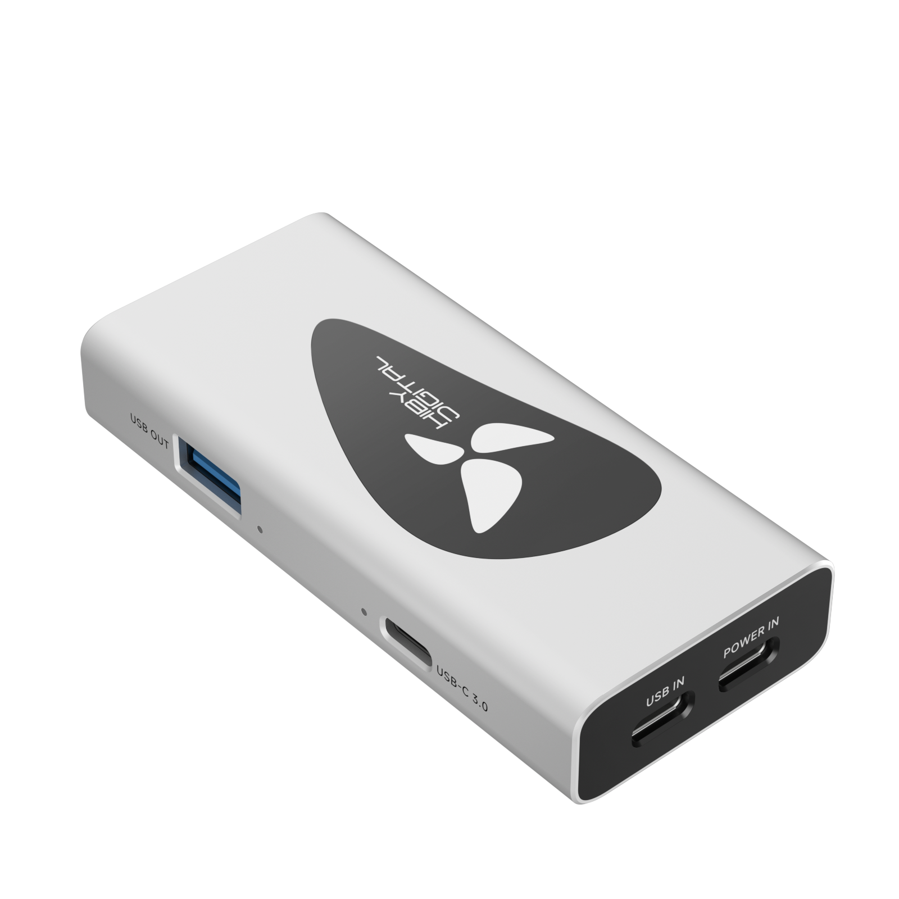
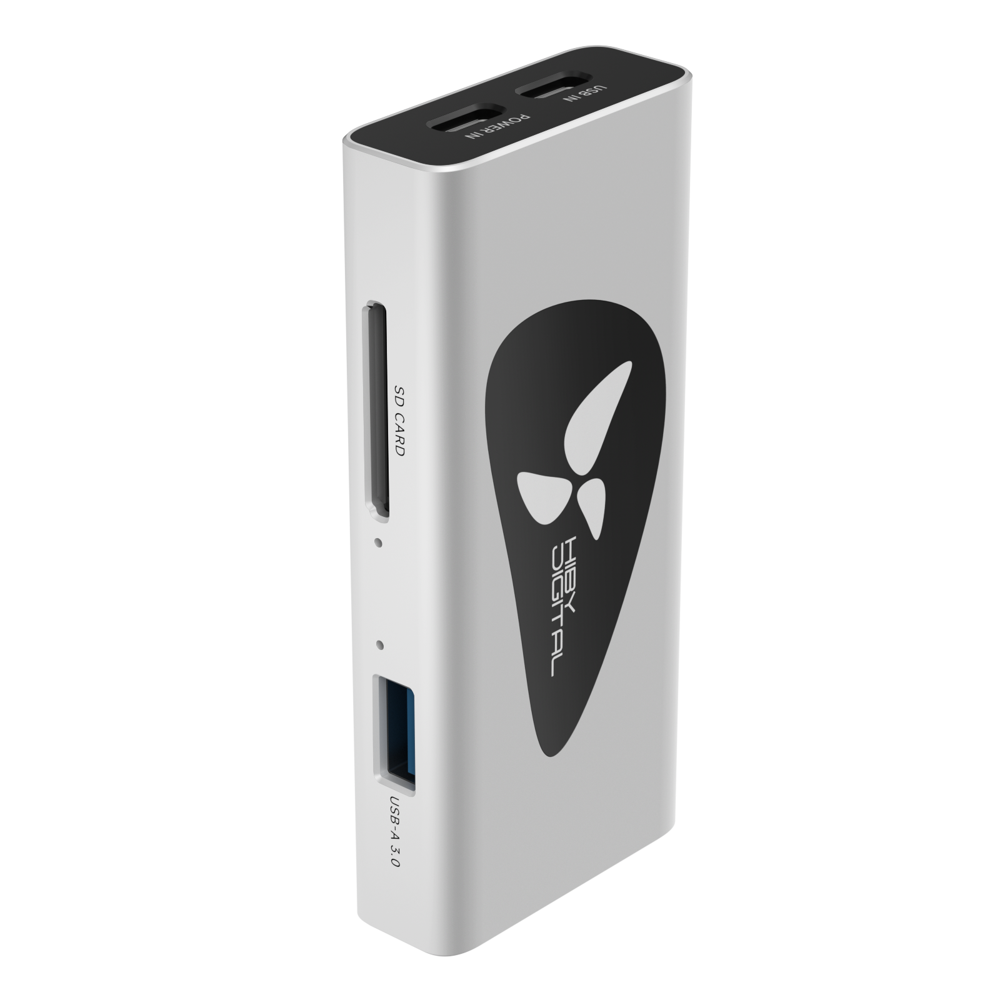
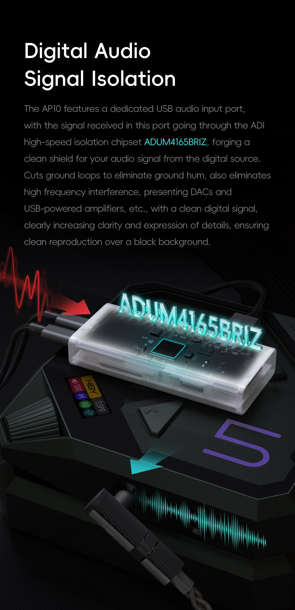
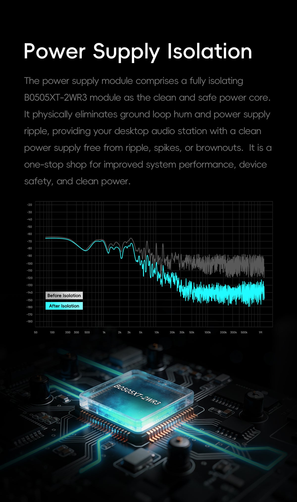
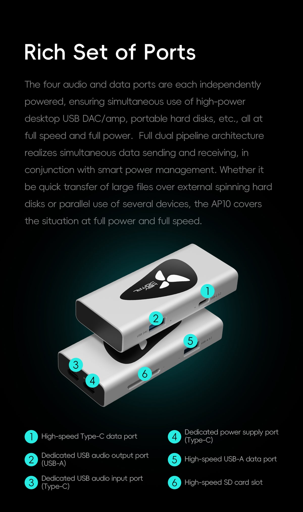
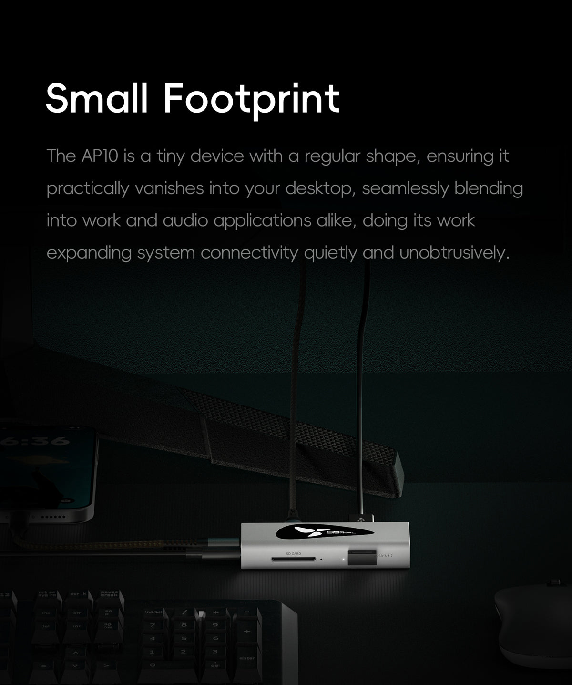
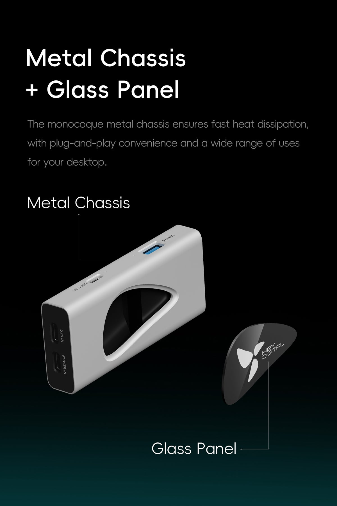

01 / OVERVIEW
AP10 ทำอะไรในระบบเสียง
HiBy Digital AP10 ไม่ใช่ DAC และไม่ได้ประมวลผลสัญญาณเสียงอนาล็อก หน้าที่สำคัญคือจัดการเส้นทาง USB ระหว่าง source กับ USB DAC/amp โดยมี dedicated USB audio path ที่ใช้ ADI ADuM4165BRIZ เพื่อทำ galvanic isolation และมีภาคจ่ายไฟแยกสำหรับฝั่งอุปกรณ์เสียง เป้าหมายทางวิศวกรรมคือช่วยตัด ground loop และลดการส่งผ่านสัญญาณรบกวนจากต้นทางเข้าสู่อุปกรณ์ปลายทาง


02 / ARCHITECTURE
ADuM4165BRIZ: หัวใจของ isolated audio path
ADuM4165 เป็น USB digital isolator จาก Analog Devices รองรับ USB 2.0 Low-, Full- และ High-Speed สูงสุด 480 Mbps และมี high-speed data retiming ในเส้นทาง High-Speed เพื่อลด jitter ที่เกิดขึ้นกับสัญญาณข้อมูลหลังผ่าน isolation barrier คุณสมบัตินี้เป็นเรื่องของ signal integrity ของ USB ไม่ควรตีความโดยอัตโนมัติว่าเป็นการเพิ่ม soundstage หรือรายละเอียดเสียงโดยไม่มีการวัดหรือการทดสอบรองรับ
ค่า 5.7 kV RMS ที่พบในข้อมูลของ ADuM4165 เป็น component isolation rating ตามเงื่อนไขการรับรองของตัว IC ไม่ใช่การรับรองว่า AP10 ทั้งเครื่องสามารถใช้งานกับความต่างศักย์ระดับดังกล่าวได้

03 / POWER ISOLATION
B0505XT-2WR3 และการแยกภาคจ่ายไฟ
AP10 ระบุการใช้โมดูล isolated DC-DC B0505XT-2WR3 เป็นส่วนหนึ่งของ power isolation แนวคิดสำคัญคือไม่เพียงแยกคู่สัญญาณ USB แต่ยังลดการเชื่อมโยงทางไฟฟ้าผ่านภาคจ่ายไฟด้วย อย่างไรก็ตาม คุณภาพ noise ที่เอาต์พุตจริงควรพิจารณาจากการวัดของระบบสำเร็จรูป ไม่ควรสรุปจากชื่อโมดูลเพียงอย่างเดียว

04 / TWO USB PATHS
480 Mbps กับ 5 Gbps เป็นคนละเส้นทาง
จุดที่ควรแยกให้ชัดคือ dedicated USB DAC output ของ AP10 ระบุเป็น USB 2.0 ขณะที่พอร์ต data hub รองรับ USB 3.2 Gen 1 สูงสุด 5 Gbps ดังนั้นตัวเลข 5 Gbps ไม่ได้หมายความว่าสัญญาณ USB Audio ที่ผ่าน ADuM4165 วิ่งผ่าน isolation barrier ที่ 5 Gbps — ADuM4165 รองรับ High-Speed USB 2.0 สูงสุด 480 Mbps
ISOLATION→USB DAC

05 / AUDIO TECH LAB MEASUREMENT
ผลวัดแรงดันจากการใช้งานจริง
การวัดชุดนี้เป็นข้อมูลจากอุปกรณ์ที่ Audio Tech Lab ใช้งานจริง ไม่ใช่ตัวเลขจากผู้ผลิต และใช้เพื่อดูพฤติกรรมของแหล่งจ่ายไฟเมื่อ AP10 ทำงานร่วมกับ Sound Blaster X5
ตัวเลขเหล่านี้เป็นผลจากชุดทดสอบเฉพาะของ Audio Tech Lab ไม่ใช่ specification รับประกันของ HiBy และไม่ควรใช้แทนการทดสอบ ripple/noise ด้วยเครื่องมือวัดที่เหมาะสม
06 / REFERENCE SYSTEM
ระบบที่ใช้ร่วมกัน
AP10 ถูกใช้งานในตำแหน่งระหว่างคอมพิวเตอร์กับ X5 ทำให้สามารถประเมินทั้งความเสถียรของ USB connection และพฤติกรรมของไฟเลี้ยงภายใต้ระบบใช้งานจริงได้ ดู PC Audio Reference System →

07 / LISTENING & INTERPRETATION
สิ่งที่ควรฟัง — และสิ่งที่ไม่ควรสรุปเร็วเกินไป
หากระบบเดิมมี ground loop, hum หรือ noise ที่เดินทางผ่าน USB การทำ galvanic isolation มีเหตุผลทางวิศวกรรมที่ชัดเจนและอาจแก้ปัญหานั้นได้โดยตรง แต่คำอธิบายอย่าง “black background”, “รายละเอียดเพิ่ม” หรือ “เวทีเสียงกว้างขึ้น” ควรถูกจัดเป็น listening observation หรือ manufacturer claim จนกว่าจะมี measurement ที่เชื่อมโยงผลดังกล่าวได้
ในระบบที่ noise floor ต่ำอยู่แล้ว ความแตกต่างจาก USB isolator อาจเล็กมากหรือไม่สามารถแยกได้ด้วยการฟังเพียงอย่างเดียว นี่คือเหตุผลที่ Audio Tech Lab แยกข้อมูลทางเทคนิค ผลวัด และประสบการณ์การฟังออกจากกัน
08 / TECHNICAL CONCLUSION
AP10 น่าสนใจตรง “การจัดการระบบ” มากกว่าการปรุงเสียง
จุดเด่นเชิงเทคนิคของ AP10 คือการรวม dedicated USB audio isolation, isolated power concept และ USB 3.2 Gen 1 data expansion ไว้ในอุปกรณ์เดียว สำหรับ PC Audio ที่มีปัญหา ground loop หรือมีอุปกรณ์ USB หลายชนิดอยู่ร่วมกัน แนวทางนี้มีประโยชน์ในฐานะเครื่องมือจัดการ connectivity และ noise path โดยไม่ต้องอ้างว่าตัวอุปกรณ์เปลี่ยนโทนเสียงของ DAC
